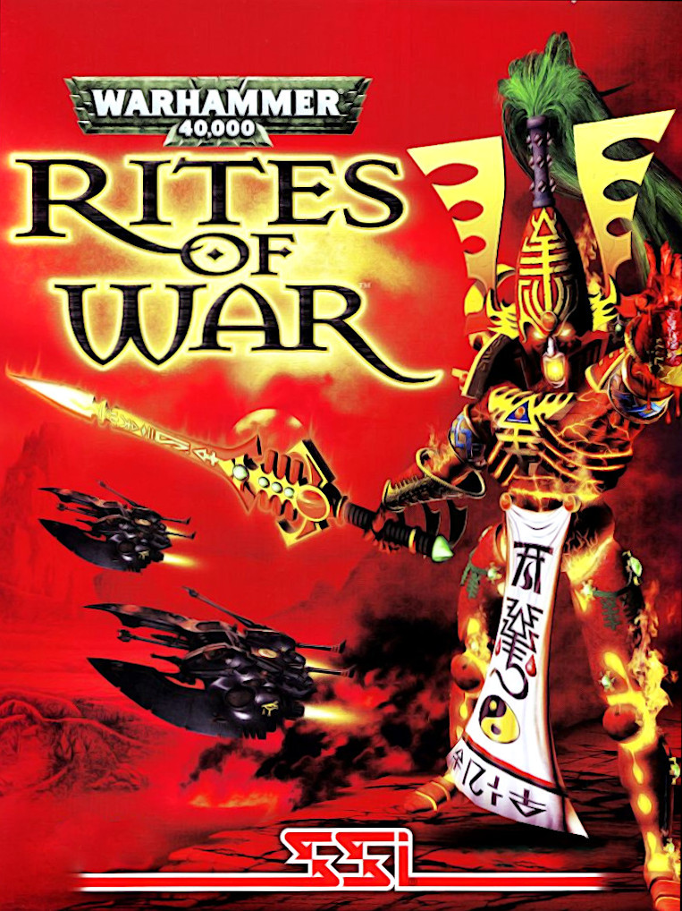

Warhammer 40,000: Rites of War
Details
|  | |
| Playtime | Not Played |
| Last Activity | Never |
| Added | 03/06/2025 0:51:02 |
| Modified | 03/06/2025 0:51:53 |
| Completion Status | Not Played |
| Library | Gog |
| Source | GOG |
| Platform | PC (Windows) |
| Release Date | 23/07/1999 |
| Community Score | |
| Critic Score | 80 |
| User Score | |
| Genre | Strategy Turn-based strategy (TBS) |
| Developer | DreamForge Intertainment |
| Publisher | Games Workshop GOG.com SSI (Strategic Simulations, Inc.) |
| Feature | Multiplayer Single Player |
| Links | Wikipedia GOG Twitch Wikia |
| Tag | |
Description

Lead the Powerful Eldar Warriors in a Desperate Struggle for Survival!
In a galaxy dominated by the uncaring Empire of Man, the mystic Eldar must battle the evil, bio-engineered Tyranids! Rites of War thrusts you into the electrifying world of Warhammer 40,000 in a battle system based on the award winning Panzer General II game system!
Inspired by the board and figurine games made popular by Games Workshop, the universe of Warhammer 40,000 is a vast and violent one, rife with strange, alien races. The mysterious Eldar are all that remains of a once great and powerful civilization that ruled the galaxy. They travel the stars in enormous spacecraft called Craftworlds, seeking the Maiden Worlds their ancestors created in ancient times.
One such world is now inhabited by humans and possesses historical records and artifacts of great power far too valuable to leave in their hands. This once proud race now fights for its very survival, and must protect the secrets and power of their ancestors from both the Imperium of Man and the evil, bio-engineered Tyranids, bent on the destruction of this fertile paradise.

- 70 diverse, animated units from the Warhammer 40,000 universe
- 24 mission campaign featuring a tightly crafted storyline, detailed atmosphere and varied victory condition
- Additional scenarios allow you to command Tyranid and Imperial armies
- Glory point system lets you build and customise armies, with your choice of unit types, war gear and warrior skills